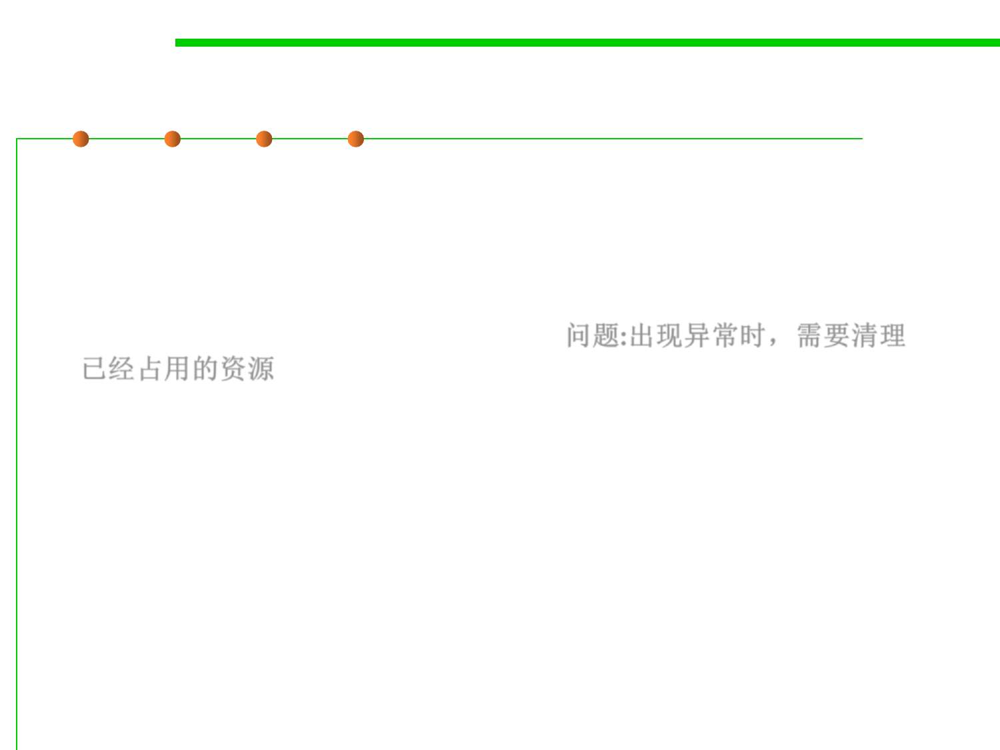

finally Clause
7.2 Error and Exception Handling
▪ When your code throws an exception, it stops processing the
remaining code in your method and exits the method.
▪ This is a problem if the method has acquired some resource (files,
database connections,…), which only this method knows about,
and that resource must be cleaned up. 问题:出现异常时，需要清理
已经占用的资源
▪ One solution is to catch and re-throw all exceptions.
▪ But this solution is tedious because you need to clean up the resource
allocation in two places—in the normal code and in the exception
code.
▪ Java has a better solution: the finally clause.